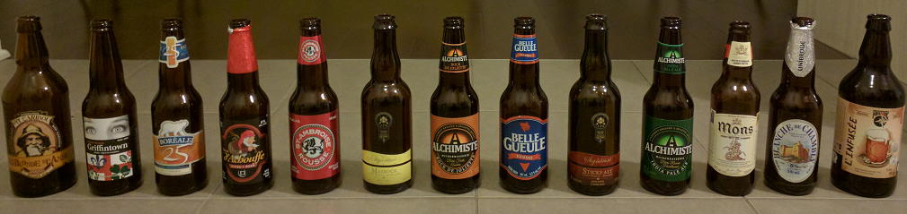

Bières05 mars 2017
Au Québec, nous sommes bien gâtés niveau bières.
Etant un "amoureux" de la bière, me voilà comblé !
Excellentes bières
Les bières sont non seulement très bonnes, mais l'étiquetage est vraiment très soigné et souvent bien fun !
Je les mets personnellement largement en tête sur le podium des meilleures bières au monde juste derrière les bières Belges, rien que ça.
Vraiment trop dommage qu'elles ne s'exportent pas en France.
Un choix considérable a un prix tout à fait abordable
Il y a des dizaines de microbrasseries au Québec, des centaines de choix de bière, de quoi être en permanence dans la découverte !
On en trouve des bonnes partout, en supermarché, chez les dépanneurs, mais pour certaines il faut aller directement chez le caviste à bières.
Mon futur appartement se situera à deux blocs seulement d'un super caviste. Même pas fait exprès :-)
Enfin, contrairement au vin, les bières ne sont pas dispendieuses, on aurait donc tort de s'en priver !
Voici un rayon "bières artisanales" d'un supermarché (dans ce même supermarché il y a un rayon faisant 3 fois la taille de celui-ci avec des bières régulières également très bonnes) :

... Le saviez-vous ?
- Au Québec, le terme "offert" ne veut généralement pas dire que cela sera gratuit, il signifie plutôt "proposé".
- Le petit copain s'appelle le chum.
- Comme aux USA, on visite quelqu'un lorsqu'on se rend chez lui.
- Le bonnet s'appelle la tuque
- Une amende s'appelle également un ticket.
- On ne dit pas slash pour parler du caractère "/", mais barre oblique
- Le symbole dièse "#" se dénomme régulièrement "carré" au téléphone.